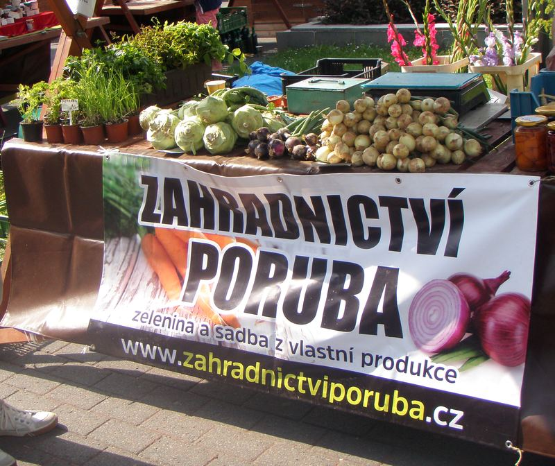
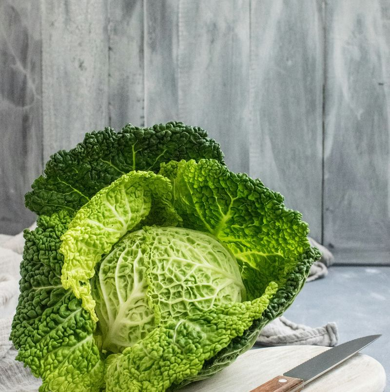
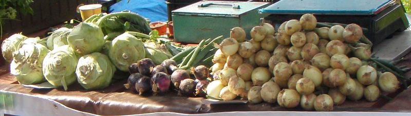
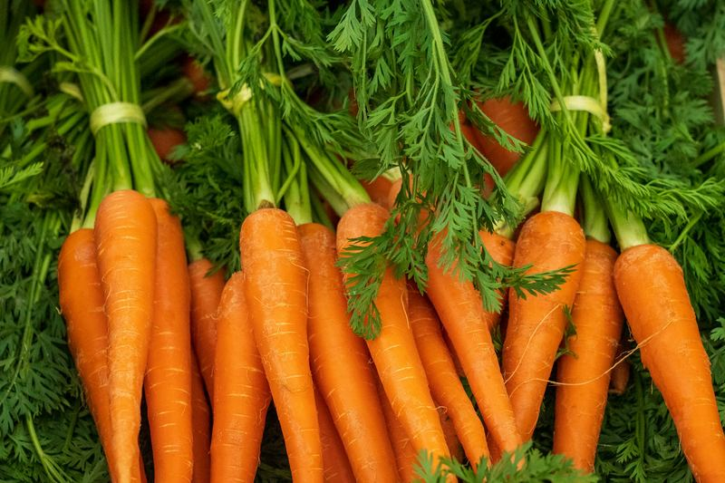
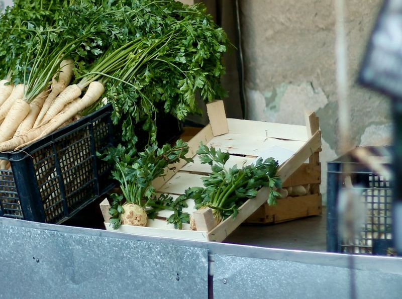
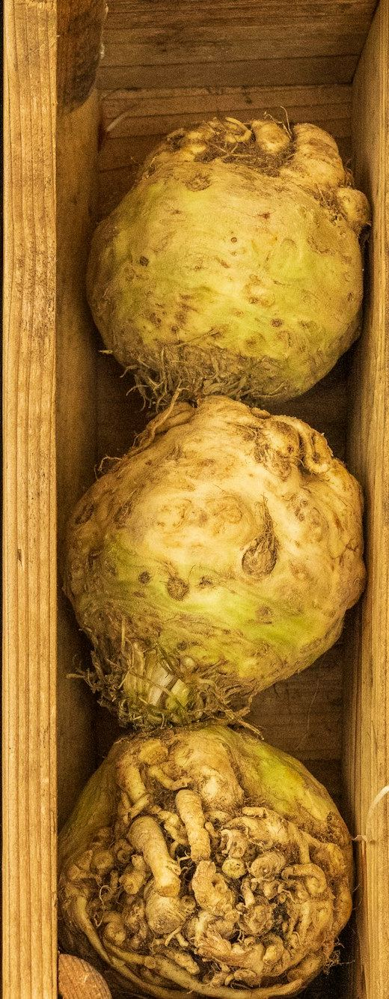
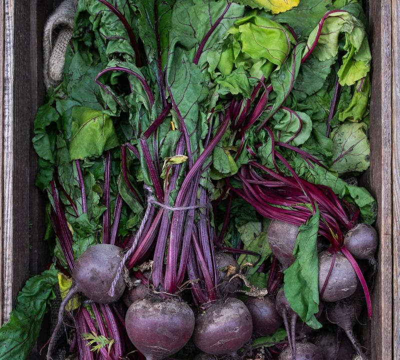
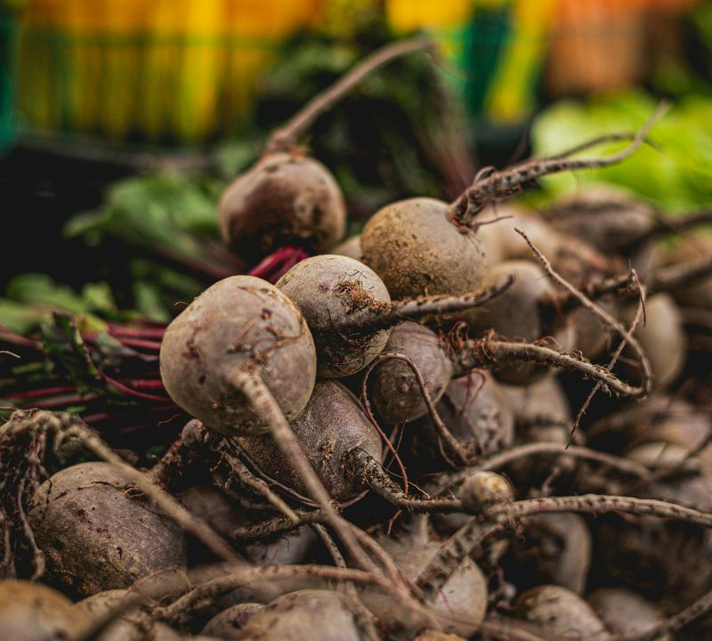
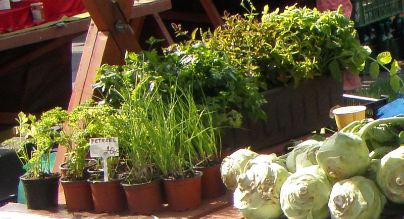
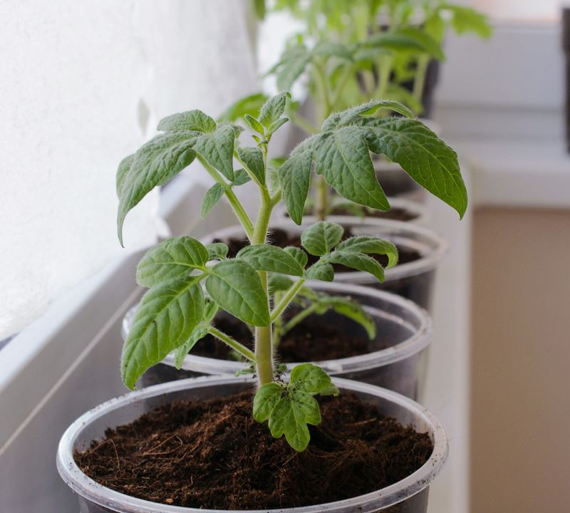

ZahradnictvíPoruba
zelenina a sadba z vlastní produkce
Prodáváme přímo v zahradnictví Ke Skalce v Porubě. Stále máme krouhané zelí, cibuli, mrkev, petržel, celer a řepu. V sezóně i sadbu.
Otevírací doba: út–pá 8–15, so 8–11

Stále nabízíme
Naklikejte si, kolik čeho chcete. Lístek nám pošlete SMS a zeleninu Vám připravíme k vyzvednutí.
-

Krouhané zelí
Na kysání doma.
-

Cibule
Žlutá i červená, jak je zrovna sklizená.
-

Mrkev
Do polévky i na zavařování.
-

Petržel
Kořenová petržel.
-

Celer
Bulvy celeru.
-

Červená řepa
Na saláty i do zavařovaček.
-

Krmná řepa
Pro králíky, kozy a další zvířata.
Sadba
Na jaře přidáváme sadbu zeleniny z vlastní produkce. Co zrovna je, zjistíte po telefonu.
Více o sadbě
Sadba z vlastní produkce
Sadbu zeleniny a další rostliny pěstujeme sami. Prodáváme je v sezóně přímo v zahradnictví a na stánku.
Co zrovna máme, Vám řekneme po telefonu: 603 584 766.



Kdy máme otevřeno
Út–pá 8–15, so 8–11
| Pondělí | zavřeno |
|---|---|
| Úterý | 8:00–15:00 |
| Středa | 8:00–15:00 |
| Čtvrtek | 8:00–15:00 |
| Pátek | 8:00–15:00 |
| Sobota | 8:00–11:00 |
| Neděle | zavřeno |
Kde nás najdete
Ke Skalce 2184/23
708 00 Ostrava-Poruba
- Telefon596 910 947
- Mobil (i SMS)603 584 766
- Telefon603 446 283
- E-mailzahradnictviporuba@seznam.cz
Platí se v hotovosti. Přístup je bezbariérový. Novinky dáváme na Facebook.